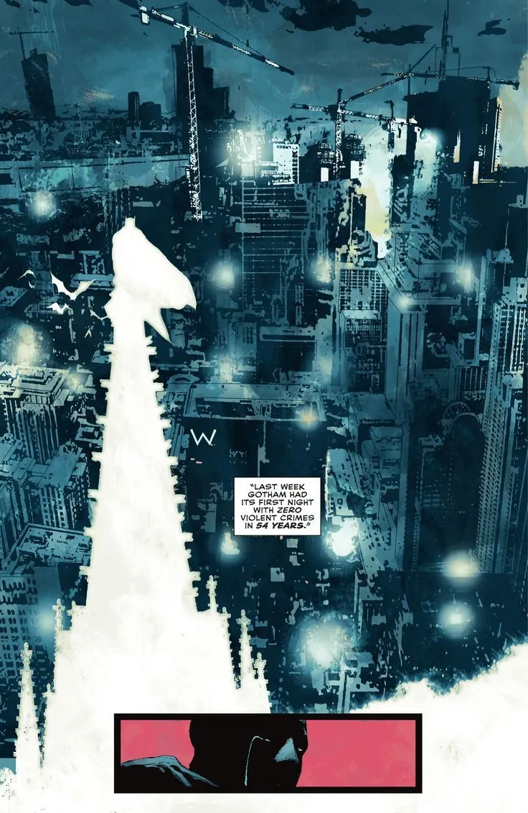
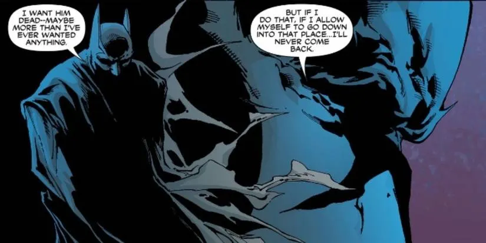

origem do personagem
A origem do Batman começa no final da década de 1930, em um contexto em que os quadrinhos de super-heróis estavam começando a ganhar força. O personagem foi criado por Bob Kane e Bill Finger para a editora DC Comics, fazendo sua primeira aparição em 1939 na revista Detective Comics #27.
Nesse primeiro momento, Batman era bem mais simples do que a versão que conhecemos hoje. Ele já era Bruce Wayne, um bilionário que decidiu combater o crime após testemunhar o assassinato de seus pais ainda criança. Esse trauma marcou profundamente sua vida e se tornou o ponto central de sua motivação: transformar dor em propósito. Em vez de confiar em poderes sobrenaturais, ele escolheu se tornar o ápice do ser humano — treinando corpo, mente, habilidades de investigação e usando sua fortuna para tecnologia e combate ao crime em Gotham City.
Com o passar das décadas, o personagem foi sendo aprofundado, e uma das versões mais importantes da sua origem veio muitos anos depois, na obra Batman: Year One, escrita por Frank Miller. Publicada originalmente em 1987, essa história reconta o primeiro ano de Bruce Wayne como Batman de forma mais realista, sombria e humana.
Em Year One, vemos um Bruce Wayne ainda falho, inseguro e aprendendo na prática o que significa ser um símbolo de justiça. Ele não começa como um herói perfeito — ele erra, quase morre, e entende que apenas força não é suficiente. Ao mesmo tempo, a história também mostra o começo do tenente James Gordon em Gotham, ambos lutando contra a corrupção de dentro e de fora do sistema.
O diferencial de Year One é justamente mostrar que o Batman não nasce pronto. Ele é construído aos poucos, através de dor, disciplina e propósito. Gotham também não é apresentada apenas como uma cidade criminosa, mas como um lugar profundamente corrompido, onde até a justiça precisa ser reconstruída.
Com isso, a origem do Batman se torna mais do que um simples evento trágico. Ela vira uma jornada de transformação: um garoto que perdeu tudo, mas que escolheu transformar essa perda em algo maior do que ele mesmo. E em Year One, essa escolha começa a tomar forma de maneira crua e realista — mostrando que o símbolo do Batman não nasce da perfeição, mas da persistência em continuar, mesmo quando tudo parece contra ele.
O Batman salva o mundo, mas e eu ?
O Batman salva o mundo porque é aquilo que ele ama fazer. Ele age por vontade própria, movido pelo desejo de transformar Gotham em um lugar melhor. Esse é exatamente o ponto que mais me chama atenção: fazer o que se ama sempre foi e sempre será um dos meus principais objetivos de vida, independentemente do dinheiro — mesmo sabendo que ele sempre precisa ser levado em consideração.
Hoje em dia, muitas pessoas acabam vivendo uma vida inteira fazendo algo que não gostam apenas pelo retorno financeiro. Para quem não tem escolha, isso é compreensível. Mas, para quem tem a possibilidade de escolher, acredito que isso se torna um erro de caminho.
O meu desejo e plano atual é seguir na área de frontend. Ainda não me considero um dos melhores, mas fazer algo que eu realmente gosto me motiva a melhorar constantemente. Isso, por si só, já faz toda a diferença no meu desenvolvimento.
Inclusive, eu vejo na senhora uma grande inspiração como professora, tanto pela forma como lida com gestão de projetos quanto pela metodologia de ensino. Isso me motiva a continuar evoluindo.
Além disso, tenho vontade de criar um perfil e produzir conteúdos, saindo um pouco do padrão de apenas fotos e textos que dominam hoje os perfis de programação, explorando formatos mais criativos e diferentes.

De João Batista para Bruce Wayne
Minha conexão com o Batman vem desde pequeno, muito por influência da minha mãe, que gostava bastante do personagem e acabou me apresentando esse universo desde cedo. Com o tempo, isso deixou de ser só um interesse infantil e passou a ter um significado mais pessoal para mim.
Depois da perda dela, essa relação com o personagem acabou ficando ainda mais forte. Eu já não convivia tanto com meu pai, e quem esteve mais presente no meu dia a dia foi minha vó. De certa forma, ela assumiu esse papel de cuidado e presença constante, algo que me faz lembrar bastante a relação do Bruce Wayne com o Alfred.
Essas semelhanças foram ficando mais evidentes com o tempo. A ideia de alguém que cresce lidando com perdas, mas encontra apoio em uma figura de referência e segue em frente mesmo assim, acabou criando uma conexão emocional maior do que só gostar do personagem — virou algo que representa partes da minha própria história.
Assim como ele, por uma boa parte da vida, a perda de alguém especial foi um trauma que ficou presente por muito tempo. Mas em determinado ponto, isso começou a mudar. O que um dia trouxe tristeza deixou de ser apenas uma ferida aberta e passou a se transformar em algo diferente — uma motivação. Hoje,essa memória já não pesa da mesma forma. Ela virou uma espécie de impulso interno, uma virada de chave. Em vez de apenas dor, existe também o desejo de fazer dar certo, de seguir em frente e construir algo melhor a partir do que foi vivido.
